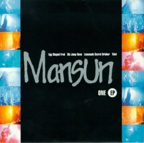
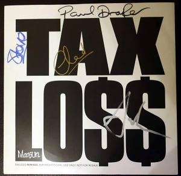

ONE EP • May 1996Egg Shaped Fred / Ski Jump Nose / Lemonade Secret Drinker / Thievingitch.
RECOVERED FROM PAULDRAPER-MUSIC.CO.UK (SINGLES.HTML) • COMPLETE EP RUN
From the self-financed 1995 Sci-Fi Hi-Fi 7" vinyl of Take It Easy Chicken through all 14 numbered Parlophone EPs, 4 UK Top 10 singles, the Brixton fan-club 7", and 2004's Slipping Away.




| EP / Cat # | Single / EP Title | Release Date | UK Chart | Full Tracklisting & B-Sides (CD1 / CD2 / Vinyl) |
|---|---|---|---|---|
SCI-001 |
Take It Easy Chicken (Debut 7") | Sep 1995 | Indie |
Sci-Fi Hi-Fi Records (1,000 copies): Take It Easy Chicken · Astrid (early version of Flourella). |
ONE EP |
Egg Shaped Fred | May 1996 | #37 |
Egg Shaped Fred · Ski Jump Nose · Lemonade Secret Drinker · Thievingitch. |
TWO EP |
Take It Easy Chicken | Jun 1996 | #32 |
Take It Easy Chicken · Drastic Sturgeon · The Greatest Pain · Moronica · Rebel Without A Quilt. |
THREE EP |
Stripper Vicar | Sep 1996 | #19 |
CD1: Stripper Vicar · The Edge · Duelling Banjos · CD2: Stripper Vicar ·The Most To Gain ·The Gods Himself ·No One Knows Us · Live EP: Live at The Leadmill Sheffield. |
FOUR EP |
Wide Open Space | Nov 1996 | #15 |
CD1: Wide Open Space · Rebel Without A Quilt · Skin Up Pin Up · CD2: Wide Open Space · Lemonade Secret Drinker · The Holy Blood And The Holy Grail · Paul Oakenfold Perfecto Remix. |
FIVE EP |
She Makes My Nose Bleed | Jan 1997 | #9 ★ |
CD1: She Makes My Nose Bleed ·The Most To Gain ·The Chad Who Loved Me (Live) · CD2: She Makes My Nose Bleed · Flourella · Check Under The Bed · Wide Open Space (Acoustic). |
SIX EP |
Taxlo$$ | Apr 1997 | #15 |
CD1 (CDR6465): Taxlo$$ ·The World's Still Open ·Theimpendingcollapseofthemanor · CD2: Taxlo$$ (Gaudi Mix) · Ski Jump Nose (Live) · Wide Open Space (Acoustic) · Taxlo$$ ( Paul Oakenfold Remix). |
SEVEN EP |
Closed For Business | Oct 1997 | #10 ★ |
CD1: Closed For Business ·K.I.S.S.I.N.G. · Everyone Must Win · CD2: Closed For Business · The World's Still Open · Realising · Look At These Idiots. |
EIGHT EP |
Legacy | Jul 1998 | #7 ★ |
CD1: Legacy ·Can't Afford To Die · SpasmOfJudgement · CD2: Legacy · When The Wind Blows · Check Under The Bed · GSOH. |
NINE EP |
Being A Girl (Part One) | Aug 1998 | #13 |
CD1: Being A Girl (Pt 1) · I Care · Been Here Before · CD2: Being A Girl (Pt 1) · Hideout · What It's Like To Be Hated. |
TEN EP |
Negative | Oct 1998 | #27 |
CD1 (CDRS6508): Negative · When The Wind Blows · King Of Beauty · CD2 (CDR6508): Negative · I Deserve What I Get · Take It Easy Chicken (Live). |
MANSUN001 |
Taxlo$$ (Live Brixton '98 Fan Club 7") | Dec 1998 | Fan Club |
Injection-moulded 7" vinyl recorded live at London Brixton Academy (23/10/1998): Taxlo$$ (Live) · Everyone Must Win (Live). |
ELEVEN EP |
Six | Feb 1999 | #16 |
CD1: Six (Single Version) · Church Of The Drive Thru Elvis · But The Trains Run On Time · CD2: Six · Fade Soon · The Unrest Cure. |
TWELVE EP |
I Can Only Disappoint U | Jul 2000 | #8 ★ |
CD1 (CDRS6544): I Can Only Disappoint U · Decisions, Decisions · Repair Man · CD2 (CDR6544): I Can Only Disappoint U · My Idea Of Fun · Golden Stone. |
THIRTEEN EP |
Electric Man | Nov 2000 | #23 |
CD1: Electric Man · The Drifter · The Apartment · CD2: Electric Man · Here Comes Avoiding The Issue · Live Tracks at Trentham Gardens. |
FOURTEEN EP |
Fool | Jan 2001 | #28 |
CD1 / Promo (CDRDJ6553): Fool · Welcome To The North · CD2: Fool · Poor Created Man · Love Is... (Instrumental). |
KLEPTO-01 |
Slipping Away | Sep 2004 | #55 |
From Kleptomania (4th Album Sessions): Slipping Away · Keep Telling Myself (Live Manchester University 2002) · Slipping Away (Video). |